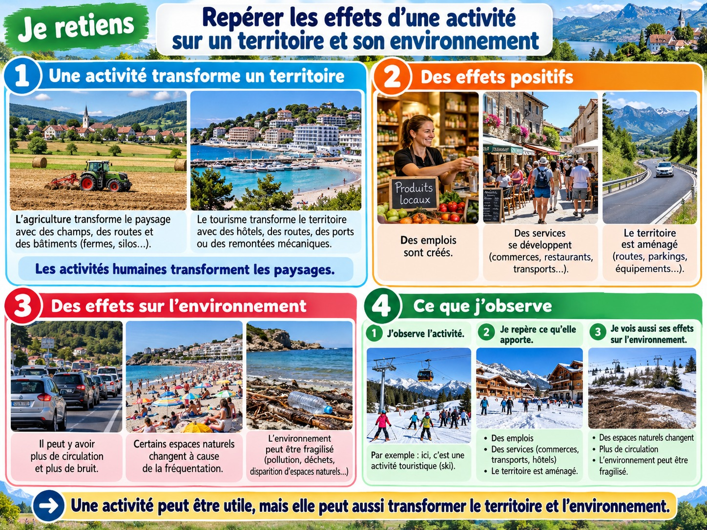

Repérer les effets d’une activité sur un territoire et son environnement
Observer les transformations du paysage et proposer une amélioration simple.
J’observe

Illustration pédagogique composée à partir de visuels de style photographique.
Une activité transforme l’espace
Construire une route, cultiver un champ ou accueillir des touristes peut modifier un paysage. On aménage l’espace pour répondre à un besoin.
Des effets différents
Un nouvel équipement peut faciliter les déplacements et créer des emplois. Mais il peut aussi prendre de la place, faire du bruit ou déranger des êtres vivants.
Chercher à limiter les effets négatifs
On peut protéger une zone naturelle, réduire les déchets, économiser l’eau ou favoriser les déplacements à pied. Il faut observer les conséquences d’un choix.
Je retiens
Les activités humaines transforment les territoires. Un aménagement peut avoir des effets positifs et négatifs. On peut chercher des solutions pour mieux protéger l’environnement.